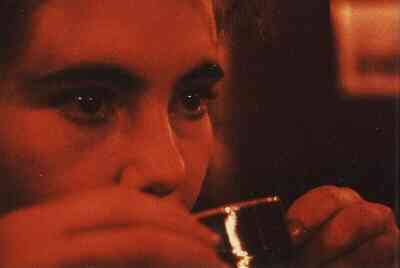

ContactElizabeth@thescars.comElizabeth Kaskens Van Bossestraat 48 2613 CR Delft Holland Phone 0031-15-215.9596 Fax 0031-15-25.77.311 | 
|
RoteRec Founder
Elizabeth studied economics and medicine, promoted on a thesis "VanGogh: one-man $4.5B production." , runs an insane intensive care unit at Colchester, as Chief Excutive Psychiatrist, is parttime professor Arts Marketing at the University of WoolWoodWhare, unhappily married, deeply in love with a contructionworker, planning a divorce within three years, loves soccer, where she dug up that hug, current research interests include the relation between arts, erections and constuctionworkers, by the way she has a son, who,.. .... yes, plays soccer in the team with a c..workdaddy.